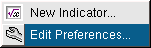
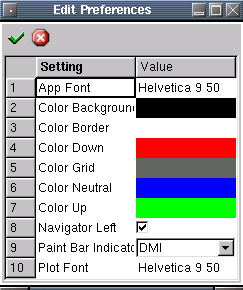

Edit Preferences

Description:
Set and edit any system wide defaults.
Here is the edit preferences dialog. The available settings you may edit
are:
- Color Up - Any up day bars located on the main chart.
- Color Down - Any down day bars located on the main chart.
- Color Background - Background color used for all charts.
- Color Grid - Color used for the grid used on all charts.
- Color Neutral - Any no change day bars located on the main chart.
- Color Border - Color used for drawing text, ticks, lines and specific
areas on a chart eg. date area
- Paint Bar Indicator - Used only for the paint bar chart type. In order
to plot, you must select an active indicator from the list, otherwise the
plot will be neutral.
